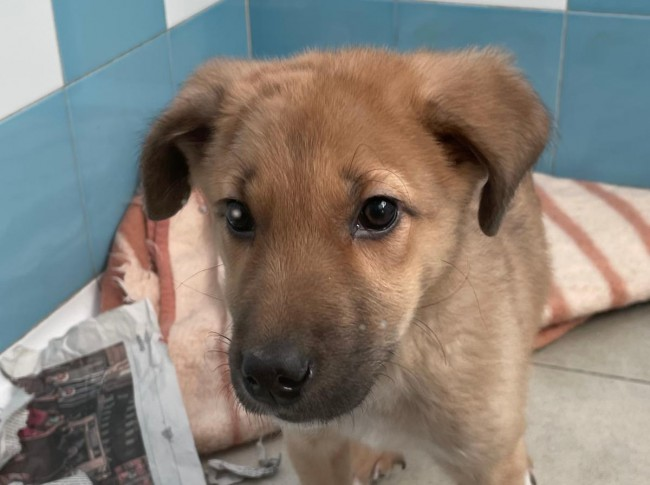
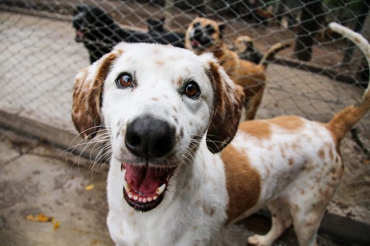
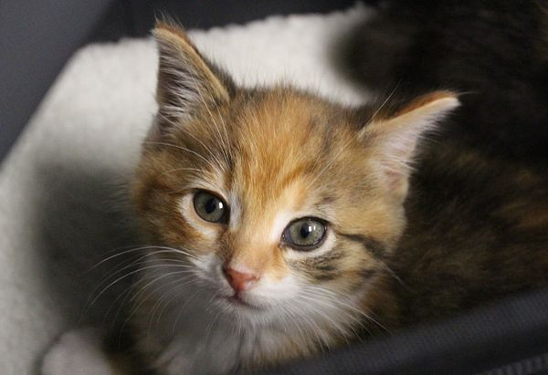
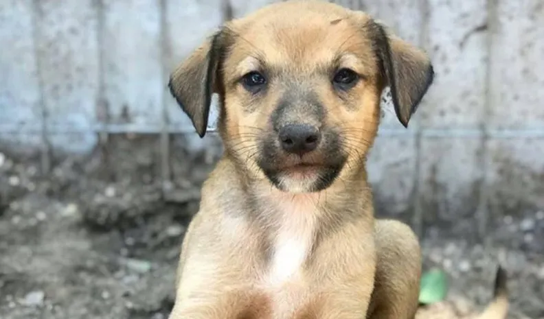

ADOPTÁ
CONOCELOS
Beto

Es tamaño mediano y tiene 2 meses.
Fue encontrado con una tormenta y obviamente abandonado pero por suerte siempre hay buena gente, gente que se
involucra.
Buscamos una casita para Beto donde le den mucho amor, no te vas a arrepentir es super amoroso y compañero.
Cleo

Es tamaño mediano y tiene 1 añito.
Busca un lugar permanente, su antiguo dueño falleció y ella se quedó solita.
Cloe esta castrada, es muy juguetona y convive con humanos perfectamente, es muy compañera y amorosa
Ginebra

Es tamaño medio y tiene 2 años
Busca un hogar que la quieran, así como la ven es un amor; es una gatita joven.
Ginebra fue rescada de la calle hace pocas semanas con dos heridas muy profundas en el abdomen y cicatrices
por todos lados.
Se encontraba muy decaida, lo llevamos de urgencias al vete
donde curaron la herida, la saturaron y le dieron lo necesario para que se empiece a recuperar.
No sabemos lo que le pasó pero tiene varios signos de haber sido atropellada.
Es muy tranquila y buena, le gusta andar en auto y es muy dormilona, solo necesita una almohadita para ser
feliz.
Luci

Es tamaño mediano y tiene 2 meses
Buscamos una casita y un hogar hermoso para ella.
Ella es Luci, fue recatada en un basural y en muy mal estado. Empezó con su desparasitación y ya está muy bien
de salud.